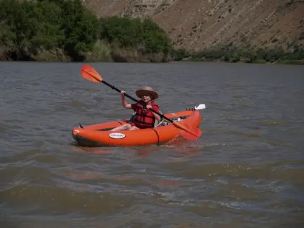
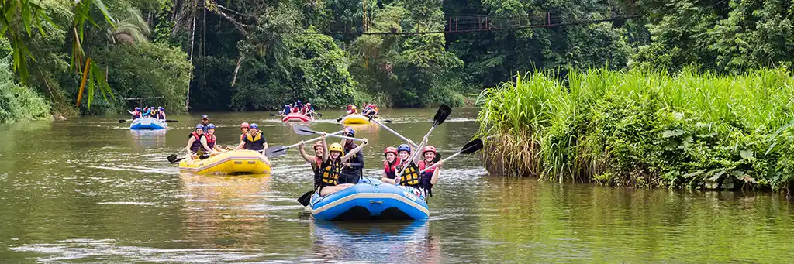
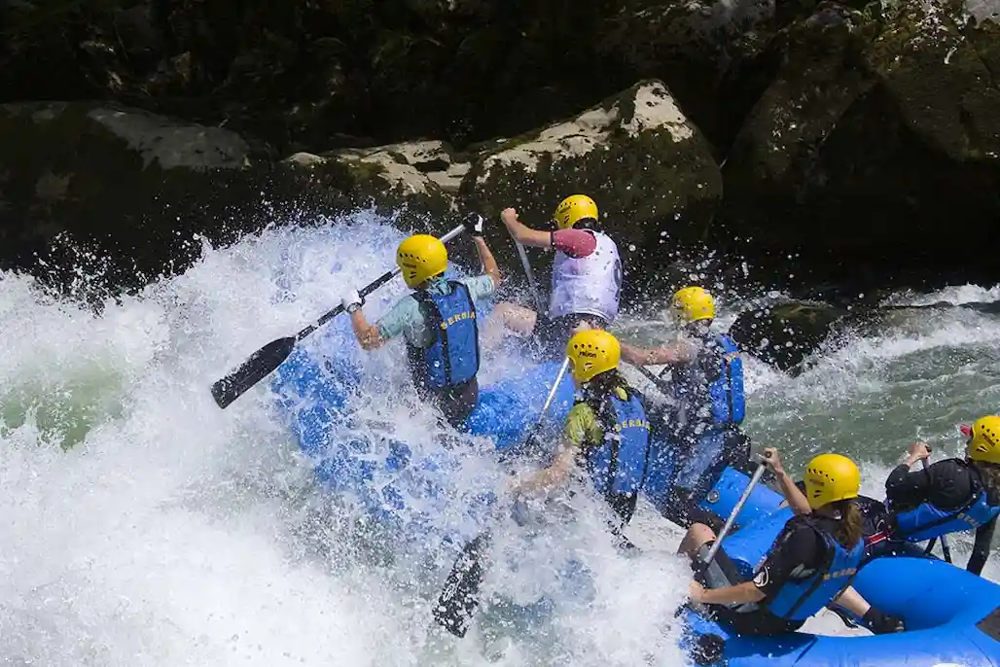
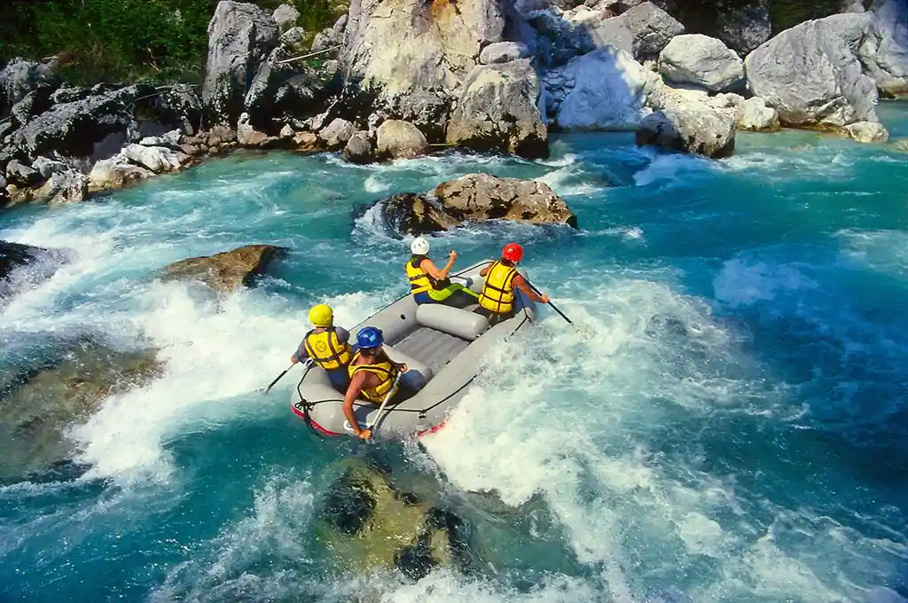

White Water Rafting
History
Founded in 1995, White Water began as a small family-owned business in the heart of the Rocky Mountains. The founders, John and Sarah Thompson, were avid outdoor enthusiasts with a passion for adventure sports. They recognized the growing interest in white water rafting and decided to share their love for the river with others.
In its early years, White Water operated with just a handful of rafts and a small team of experienced guides. The company focused on providing personalized experiences, ensuring that each trip was tailored to the skill level and preferences of the participants. This commitment to customer satisfaction quickly earned them a loyal following.
As the popularity of white water rafting surged in the late 1990s, White Water expanded its offerings. They introduced multi-day rafting trips, combining thrilling rapids with camping under the stars. The company also began to prioritize safety, investing in high-quality equipment and comprehensive training for their guides.
By the early 2000s, White Water had established itself as a leader in the industry. They received numerous awards for their commitment to safety and environmental stewardship, including recognition from local conservation groups for their efforts to protect the rivers they operated on.
In 2010, White Water embraced technology by launching an online booking system, making it easier for customers to plan their adventures. They also expanded their reach by offering trips in new locations, including the Pacific Northwest and the Appalachian Mountains.
Today, White Water is known for its exceptional service, experienced guides, and commitment to sustainability. The company continues to innovate, offering unique experiences such as eco-tours and educational programs about river ecosystems. With over 25 years of experience, White Water remains dedicated to providing unforgettable experiences on the water, fostering a love for nature and adventure in all who join them.
Adventure Awaits You!




